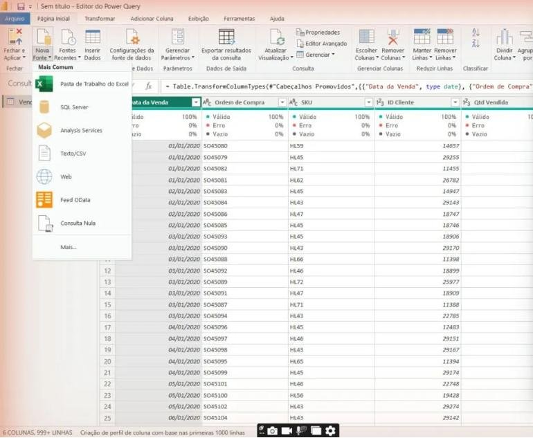

Power Query intermediário: pasta, parâmetros, mesclar e despivotar
Você vai automatizar a entrada de novos arquivos com Obter dados de Pasta, usar parâmetros para trocar de computador sem quebrar nada, cruzar tabelas com Mesclar Consultas, resumir com Agrupar Por, criar colunas condicionais e de exemplos e transformar uma tabela de metas “larga” em formato de banco de dados com Despivotar.
- Nível
- Intermediário
- Duração
- 3 a 4 horas
- Você vai precisar
- Power BI Desktop, o projeto da aula 6 e a planilha de metas abaixo
- Conteúdos
- ParâmetrosObter dados de PastaFolder.FilesMesclar ConsultasJunçõesAnti junçãoAgrupar PorColuna condicionalColuna de exemplosDespivotarReferência x Duplicar
01O que muda nesta aula
Até aqui você limpou tabelas uma por uma. Agora você vai construir consultas que se mantêm sozinhas.
| Problema do dia a dia | Recurso desta aula |
|---|---|
| Abri o .pbix em outro computador e todas as fontes quebraram | Parâmetro com o caminho da pasta |
| Todo mês chega um arquivo novo de vendas | Obter dados de Pasta (combina todos os arquivos) |
| Tem SKU vendido que não existe no cadastro? | Mesclar com anti junção |
| Quero a data da primeira e da última compra de cada cliente | Agrupar Por + Mesclar |
| Quero faixa etária e provedor de e-mail | Coluna condicional e Coluna de exemplos |
| A planilha de metas tem um mês por coluna | Despivotar colunas |
02Parâmetro com o caminho da pasta
- No Power Query: Página Inicial → Gerenciar Parâmetros → Novo Parâmetro.
- Nome:
PastaBases· Tipo: Texto · Valores sugeridos: Qualquer valor. - Valor atual: o caminho da sua pasta, terminando com barra:
C:\Users\SeuUsuario\Documents\PowerBI_Vendas\Bases\
Abra o Editor Avançado de cada consulta e troque o caminho fixo pelo parâmetro:
Fonte = Excel.Workbook(File.Contents("C:\Users\Professor\Documents\PowerBI_Vendas\Bases\Cadastro Clientes.xlsx"), null, true)Fonte = Excel.Workbook(File.Contents(PastaBases & "Cadastro Clientes.xlsx"), null, true)
Mudou de computador, de pasta ou vai entregar o projeto ao cliente? Troque um único valor (Página Inicial do Power BI → Transformar dados → Editar parâmetros) e todas as consultas apontam para o lugar certo.
03Obter dados de uma Pasta
Coloque os arquivos de vendas numa pasta e deixe o Power Query empilhar todos, inclusive os que ainda vão chegar.
Crie Bases\Vendas\ e mova para lá Base Vendas - 2020.xlsx, 2021 e 2022. Na pasta só podem ficar arquivos com a mesma estrutura.
- Nova Fonte → Mais… → Pasta → Conectar → escolha
Bases\Vendas. - Na janela com a lista de arquivos, clique em Combinar → Combinar e Transformar Dados.
- Escolha Plan1 no arquivo de exemplo → OK.
O Power Query cria uma pasta Transformar Arquivo de Vendas com consultas auxiliares (Arquivo de Exemplo, Parâmetro1, Transformar Arquivo). Não apague: elas são a “receita” aplicada a cada arquivo. A coluna Source.Name mostra de qual arquivo veio cada linha.

Se preferir uma única consulta, sem auxiliares, crie uma Consulta Nula chamada fVendas e cole:
let
Fonte = Folder.Files(PastaBases & "Vendas\"),
// só planilhas .xlsx; ignora arquivos temporários do Excel (~$...)
SoExcel = Table.SelectRows(Fonte, each [Extension] = ".xlsx" and not Text.StartsWith([Name], "~$")),
ComDados = Table.AddColumn(SoExcel, "Dados",
each Excel.Workbook([Content], true, true){[Item = "Plan1", Kind = "Sheet"]}[Data]),
Colunas = Table.SelectColumns(ComDados, {"Name", "Dados"}),
Expandido = Table.ExpandTableColumn(Colunas, "Dados",
{"Data da Venda", "Ordem de Compra", "SKU", "ID Cliente", "Qtd Vendida", "ID Loja"}),
Renomeado = Table.RenameColumns(Expandido, {{"Name", "Arquivo"}}),
Tipos = Table.TransformColumnTypes(Renomeado, {
{"Data da Venda", type date}, {"Ordem de Compra", type text}, {"SKU", type text},
{"ID Cliente", Int64.Type}, {"Qtd Vendida", Int64.Type}, {"ID Loja", Int64.Type}})
in
Tipos56.046 linhas, as mesmas da aula 6. Agora você pode excluir as consultas Vendas 2020/2021/2022 (ou mantê-las desabilitadas para comparar).
Quando chegar Base Vendas - 2023.xlsx, basta salvá-lo na pasta e clicar em Atualizar. Nenhuma consulta nova, nenhum Acrescentar.
Se alguém salvar na pasta um arquivo com colunas diferentes (ou um relatório qualquer em Excel), a atualização quebra. Combine com a equipe: a pasta é só para bases de vendas.
04Mesclar consultas: o PROCV do Power Query
Acrescentar empilha linhas; Mesclar junta colunas de tabelas diferentes por uma chave.
| Tipo de junção | Mantém | Uso típico |
|---|---|---|
| Externa esquerda | Todas da primeira + as que batem da segunda | Trazer informação extra (como PROCV) |
| Interna | Só as que existem nas duas | Ficar só com o que casa |
| Anti esquerda | Só as da primeira que não existem na segunda | Achar registros órfãos (qualidade de dados) |
| Externa completa | Todas das duas | Conciliação entre sistemas |
- Clique com o botão direito em
fVendas→ Referência. Renomeie paraAudit_SKU. - Página Inicial → Mesclar Consultas.
- Em cima, selecione a coluna SKU de Audit_SKU; embaixo, escolha dProdutos e a coluna SKU.
- Tipo de junção: Anti esquerda (linhas apenas na primeira) → OK.
Se o resultado tiver zero linhas, todo SKU vendido existe no cadastro. Se tiver linhas, esses produtos vão aparecer como “(Em branco)” nos gráficos de categoria e marca.
Clique com o botão direito em Audit_SKU e desmarque Habilitar carga: é uma consulta de verificação, não precisa ir para o modelo.
Referência cria uma consulta que parte do resultado de outra (se a original mudar, ela acompanha). Duplicar copia todas as etapas e vira independente. Para derivar tabelas, prefira Referência.
- Botão direito em
fVendas→ Referência. Renomeie paraResumoClientes. - Transformar → Agrupar Por → Avançado.
- Agrupar por: ID Cliente. Agregações:
Primeira Compra= Mín de Data da Venda;Última Compra= Máx de Data da Venda;Itens Comprados= Soma de Qtd Vendida.
= Table.Group(Fonte, {"ID Cliente"}, {
{"Primeira Compra", each List.Min([Data da Venda]), type date},
{"Última Compra", each List.Max([Data da Venda]), type date},
{"Itens Comprados", each List.Sum([Qtd Vendida]), Int64.Type}
})Desabilite a carga de ResumoClientes: vamos levar essas colunas para dClientes.
- Selecione
dClientes→ Mesclar Consultas. - Coluna ID Cliente em dClientes; tabela ResumoClientes, coluna ID Cliente.
- Junção Externa esquerda → OK.
- Na nova coluna (com “Table” em cada linha), clique no ícone de expandir ⟷, marque Primeira Compra, Última Compra e Itens Comprados, desmarque Usar o nome da coluna original como prefixo → OK.
Clientes que nunca compraram ficam com null nessas colunas, o que é correto.
Primeira e última compra são características fixas do cliente: viram atributos da dimensão e podem ser usadas em segmentações e eixos (“clientes que compraram pela primeira vez em 2022”).
05Colunas condicionais e de exemplos
Em dClientes, selecione Data Nascimento → Adicionar Coluna → Data → Idade. O resultado é uma duração; transforme: Transformar → Duração → Total de Anos, depois Arredondamento → Arredondar para Baixo. Renomeie para Idade e defina Número Inteiro.
A idade é calculada na data da atualização. Para análises de vendas passadas, a idade na data da compra seria mais exata, mas para segmentar clientes esta resolve bem.
Adicionar Coluna → Coluna Condicional. Nome: Faixa Etária. Regras (a ordem importa: a primeira verdadeira vence):
| Se Idade | Valor |
|---|---|
| é menor que 25 | 18–24 |
| é menor que 35 | 25–34 |
| é menor que 45 | 35–44 |
| é menor que 60 | 45–59 |
| Senão | 60+ |
= Table.AddColumn(#"Idade Inteira", "Faixa Etária", each
if [Idade] < 25 then "18–24"
else if [Idade] < 35 then "25–34"
else if [Idade] < 45 then "35–44"
else if [Idade] < 60 then "45–59"
else "60+", type text)Um gráfico com 60 idades diferentes não se lê. Cinco faixas mostram o perfil do cliente na hora e viram uma ótima segmentação.
- Selecione a coluna
Email→ Adicionar Coluna → Coluna de Exemplos → Da Seleção. - Na primeira linha da nova coluna, digite o domínio do e-mail dela (ex.:
icloud.com) e pressione Enter. - Digite mais um ou dois exemplos até o Power Query acertar o padrão. Ele mostra a fórmula que descobriu.
- Renomeie para
Provedor→ OK.
= Table.AddColumn(#"Faixa Etária", "Provedor", each Text.AfterDelimiter([Email], "@"), type text)
06Despivotar: metas em formato de banco de dados
Planilhas feitas para humanos têm um mês por coluna. O Power BI precisa de um mês por linha.
Nova Fonte → Pasta de Trabalho do Excel → Metas_2022.xlsx → Metas → OK. Renomeie para fMetas. Ela chega assim:
| Categoria | jan | fev | mar | … | jun |
|---|---|---|---|---|---|
| Notebook | 560.000 | … | … | … | … |
| Celular | 330.000 | … | … | … | … |
Selecione só a coluna Categoria → botão direito → Despivotar Outras Colunas. Renomeie Atributo para Mês e Valor para Meta.
| Categoria | Mês | Meta |
|---|---|---|
| Notebook | jan | 560.000 |
| Notebook | fev | … |
| … | … | … |
Se você despivotar selecionando jan a jun e alguém incluir “jul” na planilha, julho fica de fora. “Despivotar Outras Colunas” fixa só a Categoria: qualquer mês novo entra sozinho.
Para relacionar com a dCalendario, a meta precisa de uma data. Adicionar Coluna → Coluna Personalizada, nome Data:
let
Fonte = Excel.Workbook(File.Contents(PastaBases & "Metas_2022.xlsx"), null, true),
Metas = Fonte{[Item = "Metas", Kind = "Sheet"]}[Data],
Cabecalho = Table.PromoteHeaders(Metas, [PromoteAllScalars = true]),
Despiv = Table.UnpivotOtherColumns(Cabecalho, {"Categoria"}, "Mês", "Meta"),
Meses = {"jan","fev","mar","abr","mai","jun","jul","ago","set","out","nov","dez"},
ComData = Table.AddColumn(Despiv, "Data",
each #date(2022, List.PositionOf(Meses, Text.Lower([Mês])) + 1, 1), type date),
Tipos = Table.TransformColumnTypes(ComData, {{"Categoria", type text}, {"Meta", type number}}),
Final = Table.RemoveColumns(Tipos, {"Mês"})
in
FinalSalve Metas_2022.xlsx na pasta Bases para o PastaBases encontrar.
A Categoria se repete em dProdutos, então não pode ser chave primária. Crie uma dimensão só de categorias:
- Botão direito em
dProdutos→ Referência → renomeie paradCategoria. - Selecione a coluna
Categoria→ botão direito → Remover Outras Colunas. - Botão direito → Remover Duplicadas.
Fechar e Aplicar e, na Exibição de Modelo, crie:
| De (1) | Para (*) |
|---|---|
| dCategoria[Categoria] | dProdutos[Categoria] |
| dCategoria[Categoria] | fMetas[Categoria] |
| dCalendario[Date] | fMetas[Data] |
A planilha de metas inclui a categoria Televisão. Se ela não existir no seu dProdutos, inclua-a na dCategoria com Acrescentar de uma linha manual, ou deixe assim e observe: a meta aparece sem venda. Na aula 11 você vai usar fMetas para calcular Meta x Realizado.
07Organize o Power Query
- Grupos: selecione consultas → botão direito → Mover para o Grupo → Novo Grupo:
Parâmetros,Fatos,Dimensões,Auxiliares. - Dependências: Exibição → Dependências da Consulta mostra o mapa de quem alimenta quem.
- Descrição: botão direito na consulta → Propriedades → escreva para que ela serve. Quem herdar seu projeto agradece.
08Atividades
A1 · Troque de pasta
BásicoCopie a pasta Bases para outro lugar, altere só o parâmetro PastaBases e atualize. Tudo deve funcionar.
A2 · Teste a pasta
BásicoDuplique Base Vendas - 2022.xlsx dentro de Bases\Vendas com o nome Base Vendas - 2022 copia.xlsx e atualize. O que aconteceu com o faturamento? Por que isso é perigoso? Apague a cópia depois.
A3 · Clientes novos por ano
IntermediárioUsando a coluna Primeira Compra de dClientes, crie uma coluna Ano 1ª Compra e um gráfico com a quantidade de clientes novos por ano.
A4 · Faixa de ticket
IntermediárioNo ResumoClientes, inclua no Agrupar Por a contagem de pedidos distintos e crie uma coluna condicional Frequência: 1 pedido = “Único”, 2–3 = “Recorrente”, 4+ = “Fiel”. Leve para dClientes.
Dica
Agregação: Contagem de Linhas Distintas sobre Ordem de Compra. Em M: each List.Count(List.Distinct([Ordem de Compra])).
A5 · Lojas e localidades
DesafioMescle CadastroLojas com CadastroLocalidades para trazer cidade e estado para dentro da tabela de lojas (transformando o floco de neve em estrela). Relacione com fVendas pelo ID da loja.
09Resumo da aula
- Parâmetros eliminam caminhos fixos.
Folder.Filescombina todos os arquivos de uma pasta, inclusive os futuros.- Mesclar junta colunas por chave; anti junção acha registros órfãos.
- Agrupar Por resume; Referência deriva consultas sem duplicar etapas.
- Coluna condicional cria faixas; Coluna de Exemplos descobre a fórmula para você.
- Despivotar Outras Colunas transforma meses em linhas e aceita meses novos.